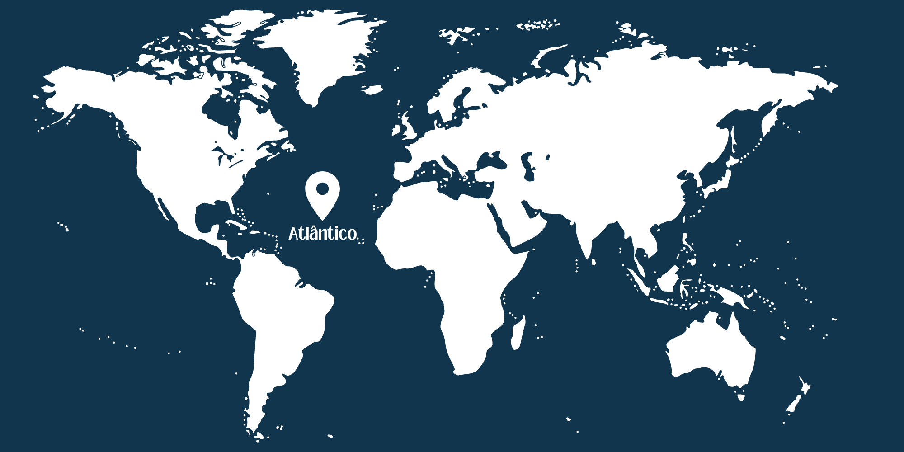
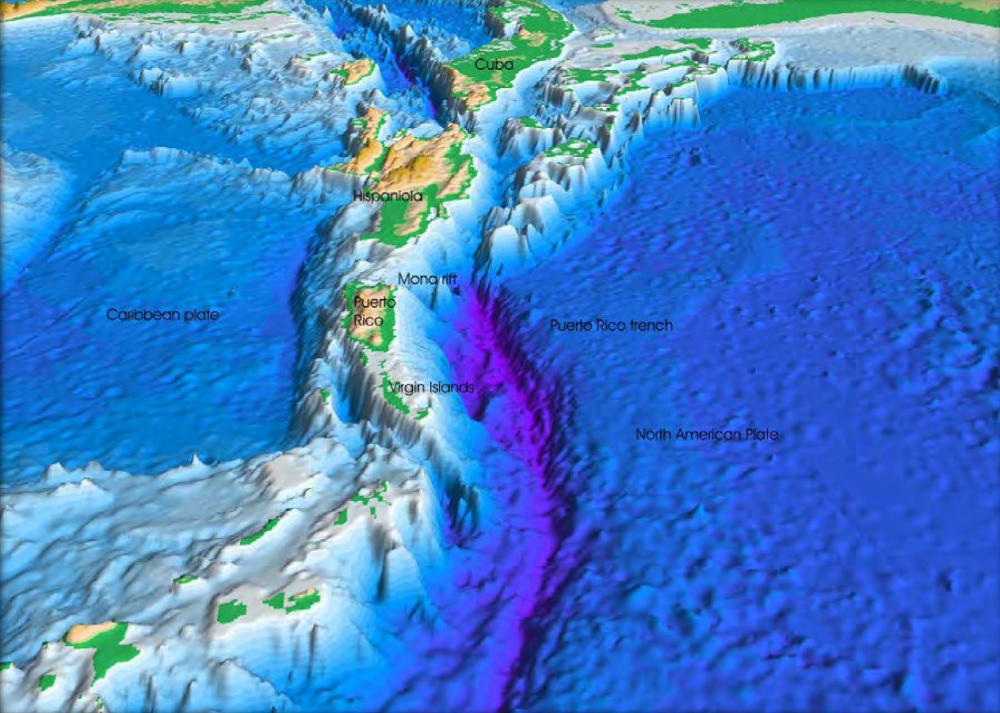
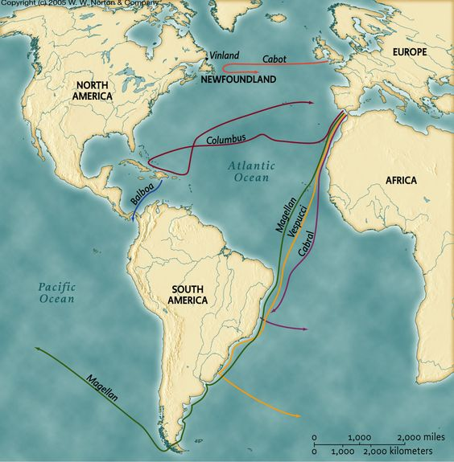
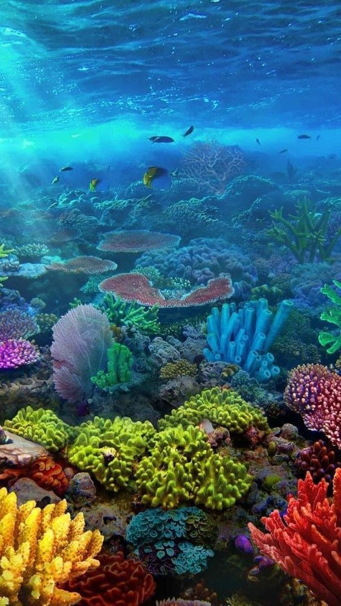
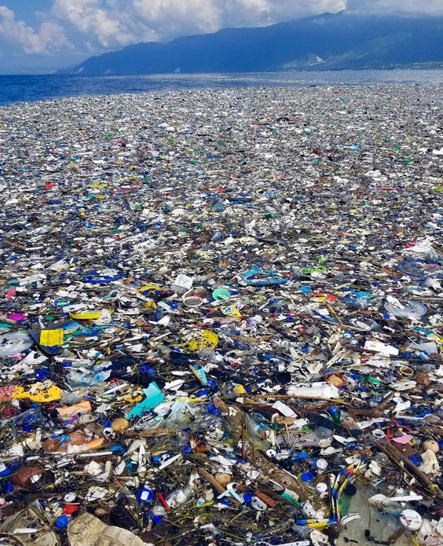

Introdução
O Oceano Atlântico é um dos cinco oceanos do mundo e ocupa uma posição central na geografia global. Com uma área que cobre aproximadamente 20% da superfície da Terra, ele se estende desde o Oceano Ártico, ao norte, até a confluência com o Oceano Antártico, ao sul. Além disso, o Atlântico serve como uma fronteira natural que separa as Américas da Europa e da África.
Este oceano desempenha um papel crucial em diversos aspectos da vida na Terra, incluindo o clima, o comércio e a biodiversidade. Através da história, o Atlântico foi uma rota vital para as grandes explorações e descobertas, servindo de ponte entre os continentes e facilitando o intercâmbio cultural e econômico. As correntes oceânicas do Atlântico, como a Corrente do Golfo, têm uma influência significativa no clima global, aquecendo regiões e regulando padrões climáticos.
O Atlântico também é fundamental para a economia global. Suas águas são ricas em recursos naturais, incluindo pescado, petróleo e gás natural. As rotas marítimas transatlânticas são algumas das mais movimentadas do mundo, facilitando o comércio e a comunicação entre os continentes. Este oceano continua a ser uma área de grande interesse para a pesquisa científica, devido à sua influência no clima global, sua biodiversidade única e os recursos que oferece.
- Oceano dos Superlativos: O Atlântico é o segundo maior oceano do mundo em tamanho, cobrindo uma área de aproximadamente 106.460.000 quilômetros quadrados, e o segundo em profundidade média, com cerca de 3.646 metros.
- Triângulo das Bermudas: Conhecido por desaparecimentos misteriosos de navios e aviões, situado no Atlântico, o Triângulo das Bermudas é uma área de grande interesse e especulação.
- Grande Barreira de Corais do Atlântico: Existe ao longo da costa do Brasil, uma contraparte menos conhecida da Grande Barreira de Corais da Austrália.
- Ilha da Madeira e Açores: Destinos turísticos populares, são ilhas vulcânicas no meio do Atlântico, conhecidas por suas paisagens deslumbrantes e biodiversidade única.
- Correntes Oceânicas: O Atlântico é cruzado por várias correntes oceânicas importantes, como a Corrente do Golfo, que desempenha um papel vital no transporte de calor e nutrientes ao redor do mundo, influenciando o clima e a vida marinha.
- Primeira Travessia Transatlântica: Cristóvão Colombo fez a primeira travessia documentada do Atlântico em 1492, chegando à América Central.
- Ilha de Ascensão: Estratégica em comunicações e monitoramento ambiental, é uma pequena ilha vulcânica no Atlântico Sul.
- Tartarugas Marinhas: O Atlântico é o lar de várias espécies de tartarugas marinhas, que migram por milhares de quilômetros entre áreas de alimentação e locais de reprodução.

Localização e Extensão
Geografia
O Oceano Atlântico é delineado pelo Oceano Ártico ao norte, o Oceano Antártico ao sul, a Europa e a África a leste, e as Américas a oeste. Esta vasta massa de água cobre uma extensão geográfica que o posiciona entre os oceanos mais importantes do mundo. A Dorsal Mesoatlântica, uma cadeia de montanhas submarinas que se estende de norte a sul, divide o oceano em duas grandes bacias. O Atlântico é conhecido por suas diversas características geográficas, incluindo mares marginais, golfos e baías que proporcionam uma interface complexa com os continentes. Destacam-se o Mar do Caribe, o Golfo do México e o Mar Mediterrâneo, cada um com características únicas e importância ecológica e econômica. A presença de numerosas ilhas, como as Ilhas Canárias, Açores e Bermudas, adiciona à complexidade geográfica do Atlântico.
Além das formações geográficas, o Atlântico também é notável por suas correntes oceânicas, que desempenham um papel crucial na circulação global de águas e na regulação do clima. As correntes de superfície e de profundidade, como a Corrente do Golfo, afetam diretamente o clima dos continentes adjacentes, transportando calor e influenciando padrões meteorológicos.
Área e Profundidade

O Oceano Atlântico abrange aproximadamente 106,5 milhões de quilômetros quadrados, tornando-se o segundo maior oceano do mundo. Esta vasta extensão de água é fundamental para a regulação do clima global e para a vida marinha. A profundidade média do Atlântico é de cerca de 3.646 metros, mas varia consideravelmente em diferentes regiões.
A Fossa de Porto Rico é o ponto mais profundo do Atlântico, atingindo uma profundidade de aproximadamente 8.376 metros. Esta fossa é uma das áreas mais profundas e menos exploradas do oceano, oferecendo oportunidades para a pesquisa científica e a exploração das profundezas marinhas. As bacias do Atlântico, como a Bacia Norte-Americana e a Bacia Europeia, variam em profundidade e contêm importantes formações geológicas. As plataformas continentais adjacentes ao Atlântico são áreas economicamente importantes devido à exploração de petróleo e gás natural. Estas plataformas também são zonas ricas em biodiversidade marinha, servindo como habitats para uma variedade de espécies marinhas. A compreensão das profundezas do Atlântico é crucial para a exploração sustentável dos recursos naturais e para a preservação dos ecossistemas marinhos.
História
Descobertas e Exploração
A história das descobertas e explorações do Oceano Atlântico é rica e complexa. Os vikings foram provavelmente os primeiros europeus a cruzar o Atlântico Norte, estabelecendo colônias na Groenlândia e chegando até a América do Norte por volta do ano 1000. Este foi um prelúdio para as grandes explorações da Era dos Descobrimentos, que começaram no século XV. Durante a Era dos Descobrimentos, navegadores europeus como Cristóvão Colombo, Vasco da Gama e Fernão de Magalhães desafiaram os limites do mundo conhecido, cruzando o Atlântico e estabelecendo rotas comerciais e colônias. Em 1492, Cristóvão Colombo chegou ao continente americano, uma descoberta que transformou radicalmente as relações entre o Velho e o Novo Mundo. Estas expedições não apenas abriram novos territórios para exploração e colonização, mas também promoveram o intercâmbio cultural e econômico entre continentes.

As navegações transatlânticas também desempenharam um papel crucial no desenvolvimento do comércio global e na expansão dos impérios europeus. Rotas comerciais estabelecidas através do Atlântico permitiram o fluxo de mercadorias, pessoas e ideias, criando uma rede global que moldou a história moderna. No entanto, essas explorações também tiveram impactos devastadores nas populações indígenas e no meio ambiente, cujos efeitos são sentidos até hoje.
História Geológica
O Oceano Atlântico tem uma história geológica fascinante, remontando ao período Jurássico, cerca de 200 milhões de anos atrás. Durante este período, o supercontinente Pangeia começou a se fragmentar, resultando na formação dos continentes modernos e na criação do Atlântico. Este processo de separação continua até hoje, com a expansão do fundo oceânico ao longo da Dorsal Mesoatlântica. A Dorsal Mesoatlântica é uma das características geológicas mais importantes do Atlântico, sendo uma cadeia de montanhas submarinas que se estende de norte a sul do oceano. Esta dorsal é uma área de intensa atividade tectônica, onde novas crostas oceânicas são formadas, expandindo lentamente o oceano. Este processo de expansão contribui para a dinâmica geológica e para a formação de características como montanhas submarinas e fossas oceânicas.
Os eventos geológicos ao longo da história do Atlântico também incluem episódios de formação e derretimento de grandes camadas de gelo durante as eras glaciais, o que teve impactos significativos nos níveis do mar e nas correntes oceânicas. Estes processos moldaram a configuração atual do oceano e influenciam sua dinâmica ecológica e climática. A compreensão da história geológica do Atlântico é crucial para a ciência da Terra e para prever mudanças futuras no sistema global.
Ecossistemas e Vida Marinha
Biodiversidade

O Oceano Atlântico abriga uma biodiversidade rica e variada, com uma vasta gama de espécies marinhas que vão desde pequenos plânctons até grandes mamíferos como baleias e golfinhos. Esta biodiversidade é sustentada por uma variedade de habitats marinhos, incluindo recifes de corais, manguezais, estuários e zonas abissais. Cada um desses habitats oferece condições únicas que suportam diferentes formas de vida marinha.
Os recifes de corais, encontrados principalmente no Caribe, são alguns dos ecossistemas marinhos mais diversos do mundo. Eles fornecem abrigo e sustento para inúmeras espécies de peixes, invertebrados e outros organismos marinhos. Além de sua importância ecológica, os recifes de corais também têm um valor econômico significativo, atraindo turistas e sustentando pescarias locais. No entanto, esses ecossistemas estão sob ameaça devido à poluição, mudanças climáticas e práticas de pesca destrutivas. Os manguezais e estuários, encontrados ao longo das costas do Atlântico, desempenham um papel crucial na proteção costeira e na biodiversidade marinha. Os manguezais atuam como barreiras naturais contra tempestades e erosão, além de serem áreas de reprodução para muitas espécies de peixes e invertebrados. Os estuários, onde a água doce dos rios encontra a água salgada do oceano, são áreas extremamente produtivas que servem como viveiros para numerosas espécies marinhas.
Ecossistemas
Os ecossistemas marinhos do Atlântico são diversos e incluem uma ampla gama de habitats que suportam uma variedade de formas de vida. Além dos recifes de corais e manguezais, o Atlântico também possui vastas áreas de mar aberto e zonas abissais que são menos exploradas, mas igualmente importantes. As zonas abissais, localizadas nas profundezas do oceano, são habitadas por espécies adaptadas a condições extremas de pressão, escuridão e frio.
Os ecossistemas pelágicos do Atlântico, ou zonas de mar aberto, são caracterizados por correntes oceânicas que transportam nutrientes e suportam a vida marinha. Estas áreas são habitats importantes para grandes predadores marinhos, como tubarões e atuns, além de serem rotas migratórias para espécies como as baleias jubarte. As correntes oceânicas também desempenham um papel vital na distribuição de nutrientes, que sustenta a cadeia alimentar marinha.
Economia e Uso Humano
Pesca e Aquicultura
A pesca no Oceano Atlântico é uma atividade econômica fundamental, sustentando comunidades costeiras e fornecendo alimento e emprego. Espécies comerciais como bacalhau, atum e lagosta são vitais para as economias locais, mas a pesca sustentável é um desafio constante devido à necessidade de equilibrar a demanda econômica com a conservação dos estoques pesqueiros. Enquanto isso, a aquicultura está em expansão como uma alternativa à pesca tradicional, oferecendo segurança alimentar e aliviando a pressão sobre as populações selvagens, embora enfrente desafios como poluição e gestão sustentável.
Transporte e Comércio
O Oceano Atlântico é uma rota crucial para o comércio internacional, conectando as economias das Américas, Europa e África. Portos importantes como Nova York e Roterdã desempenham um papel central nesse comércio global, facilitando o transporte de mercadorias como petróleo, produtos manufaturados e alimentos. Além disso, o transporte marítimo e os cabos submarinos desempenham um papel vital na comunicação e cooperação internacional, mas enfrentam desafios de segurança, meio ambiente e eficiência.
Recursos Naturais
O Atlântico é rico em recursos naturais, incluindo petróleo, gás natural e minerais como sal e areia. A exploração desses recursos é crucial para a economia global, mas levanta desafios ambientais e de sustentabilidade. A mineração marinha, em particular, está emergindo como uma indústria potencialmente lucrativa, mas levanta preocupações sobre o impacto ambiental. A conservação desses recursos requer esforços para equilibrar a exploração econômica com a proteção ambiental, através de políticas de gestão sustentável e inovação tecnológica.
Impactos Ambientais e Conservação
Poluição
A poluição é uma ameaça grave para o Oceano Atlântico, afetando tanto os ecossistemas marinhos quanto as comunidades costeiras. A poluição por plásticos é especialmente preocupante, com milhões de toneladas de resíduos plásticos entrando no oceano anualmente, causando danos à vida marinha e impactando a saúde humana. Outras formas de poluição, como derramamentos de óleo e poluição por nutrientes, também têm efeitos devastadores sobre os habitats marinhos. Ações coordenadas em níveis local, nacional e internacional são necessárias para combater essa poluição, incluindo políticas de redução de resíduos e tecnologias de tratamento de águas residuais, além de conscientização pública e educação.
Mudança Climática

A mudança climática está provocando impactos significativos no Oceano Atlântico, incluindo o aquecimento das águas, a elevação do nível do mar e a acidificação dos oceanos. Esses efeitos têm sérias consequências para os ecossistemas marinhos e as comunidades costeiras, ameaçando a biodiversidade e a sustentabilidade das atividades humanas. A mitigação dos impactos da mudança climática requer ações globais para reduzir as emissões de gases de efeito estufa, proteger os ecossistemas marinhos e desenvolver estratégias de adaptação. Políticas internacionais e investimentos em pesquisa científica são essenciais para enfrentar esse desafio.
Esforços de Conservação
Os esforços de conservação no Oceano Atlântico desempenham um papel crucial na proteção da biodiversidade marinha e na preservação dos ecossistemas costeiros ao longo de suas vastas extensões. A criação de áreas marinhas protegidas em diferentes regiões do Atlântico, desde as águas tropicais até as áreas temperadas e polares, é fundamental para oferecer refúgio para uma variedade de espécies marinhas, incluindo peixes, mamíferos marinhos e tartarugas marinhas. Além disso, medidas de conservação como a gestão pesqueira sustentável, a redução da poluição marinha e a mitigação dos impactos das mudanças climáticas são essenciais para garantir a saúde dos ecossistemas marinhos e a viabilidade das atividades econômicas dependentes dos recursos oceânicos.
A cooperação internacional desempenha um papel crucial na promoção da conservação marinha no Oceano Atlântico, dada a sua vastidão e complexidade. Iniciativas regionais e acordos internacionais entre os países ribeirinhos do Atlântico, bem como parcerias entre governos, organizações não governamentais e o setor privado, são essenciais para enfrentar desafios como a pesca ilegal, a poluição transfronteiriça e a degradação dos habitats costeiros. Ao promover uma abordagem colaborativa e integrada para a conservação marinha, esses esforços visam proteger a rica biodiversidade do Oceano Atlântico e garantir sua sustentabilidade para as gerações futuras.